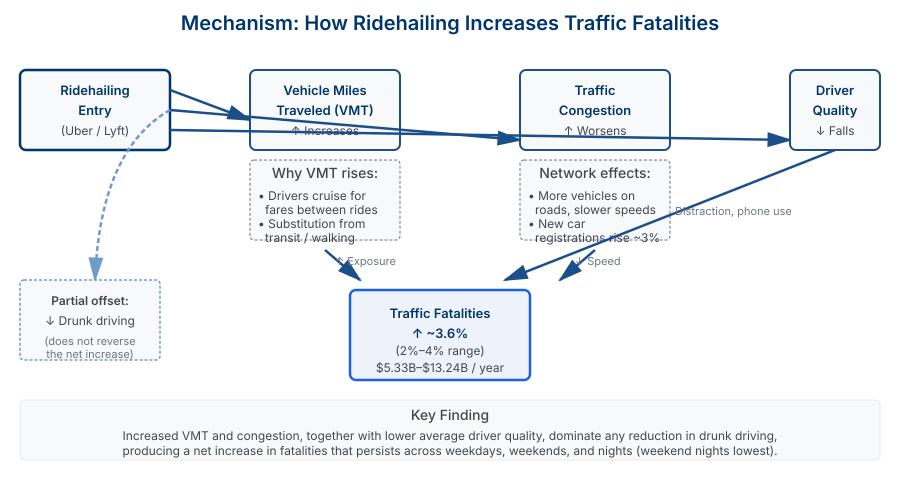

Abstract
We examine the impact of ridehailing services (Uber and Lyft) on traffic fatalities using variation in the timing of ridehailing entry across U.S. cities. While proponents argue that ridehailing reduces drunk driving by providing convenient alternatives to driving under the influence, the net effect on traffic safety depends on how ridehailing affects overall vehicle miles traveled (VMT) and traffic congestion.
Using difference-in-differences analysis exploiting staggered entry timing, we find that ridehailing entry is associated with approximately 3% increase in total traffic fatalities and fatal accidents (2-4% range). This increase is driven primarily by higher fatality rates in cities with greater ridehailing penetration and during peak usage hours. The evidence suggests that increased VMT and congestion from ridehailing services offset any reduction in drunk-driving incidents, resulting in a net increase in traffic deaths. Back-of-the-envelope estimates suggest an annual cost of approximately $5.33 billion to $13.24 billion in human lives.
Key Findings
Increased Traffic Fatalities
Ridehailing entry is associated with approximately 3% increase in fatal accidents and fatalities (2-4% range), with larger effects in cities with higher ridehailing adoption rates.
Time Patterns
The fatality increase is concentrated during evening and weekend hours when ridehailing usage peaks, suggesting the effect operates through increased traffic volume.
Mechanism
Evidence points to increased vehicle miles traveled (VMT) and traffic congestion as the primary mechanisms, overwhelming any drunk-driving reduction benefits.
Policy Trade-offs
The findings reveal an important externality: individual convenience gains from ridehailing impose collective public safety costs through increased traffic exposure.
Results and Mechanisms
Figure 1: Key Results

This figure shows the main quantitative findings: a 3% increase in fatal accidents and fatalities for both vehicle occupants and pedestrians, with mechanisms through vehicle miles traveled, traffic congestion, and behavioral effects.
Figure 2: Causal Mechanism Diagram

This diagram illustrates the causal channels through which ridehailing entry increases fatalities: increased vehicle miles traveled (VMT), traffic congestion, and driver behavioral changes. While ridehailing reduces drunk driving, the net effect is an increase in fatalities due to the magnitude of VMT and congestion effects.